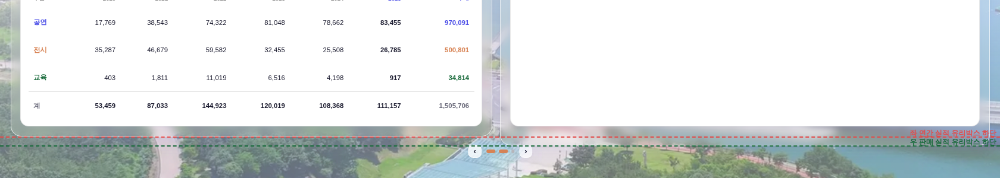
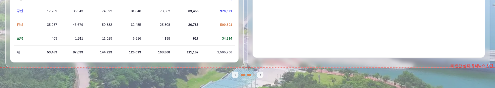

?qa=1#biz 시드) ·
빨강 점선 = 좌 「연간 실적」 유리박스 하단선 · 초록 점선 = 우 「판매 실적」 유리박스 하단선(Δ>0.5px일 때만 그림)
| 항목 | 전 | 후 |
|---|---|---|
| 좌 「연간 실적」 박스 높이 | 916.63px | 916.63px |
| 우 「판매 실적」 박스 높이 | 932.38px | 916.63px |
| 상단선 Δ (우−좌) | 0.00px | 0.00px |
| 하단선 Δ (우−좌) | +15.75px | 0.00px |
| 상세 슬롯에 더미 220px 주입 시 하단선 Δ | (누적 초과) | 0.00px |
측정 좌표는 시각 px(줌 0.875 적용). 판정 = 기틀 [픽셀실측] Δ≤0.5px → 0.00px 달성.
우측 유리박스 안은 목록 카드(.bizm-card) 뒤에 #rail-yrm-uha(개별 사업 상세 슬롯)가 한 칸 더 붙는다.
그래서 [data-bizmbox] .bizm-card:last-child{margin-bottom:0} 규칙이 목록 카드에 걸리지 않아
카드 바깥여백 14px + 슬롯 잔여 4px = 18px(설계 px, 시각 15.75px) 만큼 우측 박스만 아래로 길어졌다.
정렬 계산(_srailAlignTop)이 카드 하단끼리만 맞추고 있어서, 카드는 같은 선인데 정작 눈에 보이는 블러 도형은 어긋난 상태였다.
_srailAlignTop의 정렬 앵커를 좌 「전체 실적표」 카드 하단 → 좌 유리박스([data-bizmbox]) 하단으로 승격.
목록 카드 아래로 박스가 더 먹는 몫(_tail = 카드 여백 + 상세 슬롯 + 박스 패딩·보더)을 먼저 빼고 목록 높이를 잡고,
잔차 1패스 보정도 박스 하단 기준으로 측정한다. → 상세 슬롯의 내용·유무와 무관하게 두 블러 도형의 높이·하단선이 항상 일치.
좁은 화면(≤1200, 레일 숨김)·4면(고객 분석)에선 박스가 없으므로 종전 카드 기준 폴백 유지.


python3 tools/check_design.py — 통과(raw hex 1605/1605 · :root 2/0 · 신규 색·토큰 0)node tools/smoke_rail_align.mjs — 통과(분야 표 2개 틀 통일)